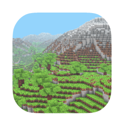
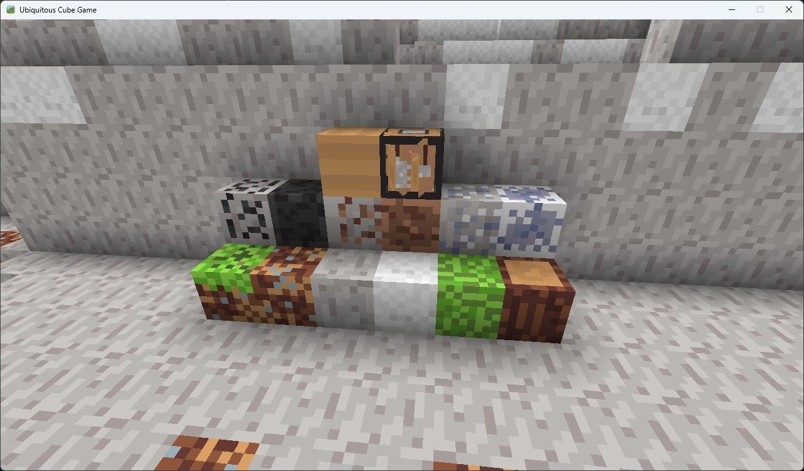
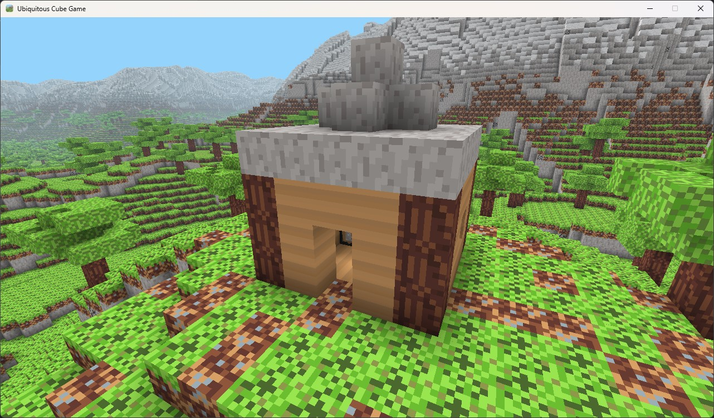

Introduction
I would like to introduce you to my personal project Ubiquitous Cube Game. This game is a Minecraft clone developed in Python using the ModernGL library to create voxels in OpenGL. The goal with this game is to achieve a personal deadline of mine. I've had multiple attempts over the years but never that have gotten this close before. I'm pretty proud of the work done to create what I have so far.
So far this has been tested on a MacBook Pro with a M2 Pro chip and a desktop PC with a Ryzen 7 2700X and a RX Vega 56 running Windows 11. The game uses modern OpenGL instead of OpenGL 1.0 features that have been deprecated for a long time (since 2008). While OpenGL MAY be on its way out with Vulkan becoming more mainstream, I wanted to able to work on this on my MacBook too.
You can find the project here: Link to ubiquitous-cube-game
Goals with this project
My goal is to create a playable game this year. Eventually I want to add networking features to this game so that a friend can join and explore with you. The goal of this is not to create a commercial title. Just something that demonstrates my Python and OpenGL skills. So far I've taken a basic voxel game engine and made it more game-like.
About the game
I did not want to reinvent the wheel with this game. My original interation of the voxel engine was slow and was using OpenGL 1.0 features that have long since been deprecated. My launching off point for a more optimized voxel engine was Coder Space's Creating a Voxel Engine Tutorial. This tutorial was an excellent guide to creating a more optimized voxel game engine. The OpenGL 3.0+ features helped me a ton too and the explainations helped with wrapping my head around how something was drawn in more modern OpenGL.
In OpenGL 1.0 you'd define a cube doing something like this:
static const GLfloat g_vertex_buffer_data[] = {
-1.0f,-1.0f,-1.0f,
-1.0f,-1.0f, 1.0f,
-1.0f, 1.0f, 1.0f,
1.0f, 1.0f,-1.0f,
-1.0f,-1.0f,-1.0f,
-1.0f, 1.0f,-1.0f,
1.0f,-1.0f, 1.0f,
-1.0f,-1.0f,-1.0f,
1.0f,-1.0f,-1.0f,
1.0f, 1.0f,-1.0f,
1.0f,-1.0f,-1.0f,
-1.0f,-1.0f,-1.0f,
-1.0f,-1.0f,-1.0f,
-1.0f, 1.0f, 1.0f,
-1.0f, 1.0f,-1.0f,
1.0f,-1.0f, 1.0f,
-1.0f,-1.0f, 1.0f,
-1.0f,-1.0f,-1.0f,
-1.0f, 1.0f, 1.0f,
-1.0f,-1.0f, 1.0f,
1.0f,-1.0f, 1.0f,
1.0f, 1.0f, 1.0f,
1.0f,-1.0f,-1.0f,
1.0f, 1.0f,-1.0f,
1.0f,-1.0f,-1.0f,
1.0f, 1.0f, 1.0f,
1.0f,-1.0f, 1.0f,
1.0f, 1.0f, 1.0f,
1.0f, 1.0f,-1.0f,
-1.0f, 1.0f,-1.0f,
1.0f, 1.0f, 1.0f,
-1.0f, 1.0f,-1.0f,
-1.0f, 1.0f, 1.0f,
1.0f, 1.0f, 1.0f,
-1.0f, 1.0f, 1.0f,
1.0f,-1.0f, 1.0f
};
Then you would draw it like this:
glDrawArrays(GL_TRIANGLES, 0, 12*3);
Now in more modern OpenGL we create a cube/voxel by first defining our vertices and indices:
vertices = [
(0, 0, 1), (1, 0, 1), (1, 1, 1), (0, 1, 1),
(0, 1, 0), (0, 0, 0), (1, 0, 0), (1, 1, 0)
]
indices = [
(0, 2, 3), (0, 1, 2),
(1, 7, 2), (1, 6, 7),
(6, 5, 4), (4, 7, 6),
(3, 4, 5), (3, 5, 0),
(3, 7, 4), (3, 2, 7),
(0, 6, 1), (0, 5, 6)
]
Then we return it as a NumPy array for that sweet sweet resource saving. To draw the cube we then have to take our vertex data in the form of a NumPy array and then create a Vertex Array Object and pass that into a vertex buffer object so that the GPU can render this in our window later.
Anyway, that is enough ranting about OpenGL on my end. I just found the process so interesting when compared to the old ways of doing things on the GPU. Although the OpenGL 1.0 stuff would be great to know if one was to develop a game for a legacy OS like Windows 98.
More about the game
The game engine uses the tools from the OpenSimplex library to generate noise and then applies it the rendered chunks.
Below is a screenshot of the world being rendered:

Currently, everytime you load into the game you will get an entirely brandnew world that is generated. The seed gets printed to the Python console. Right now you can fly around and place certain blocks. I have several blocks that can be placed as of writing:

Here I have created a basic house using the blocks I've added into the game:

Table of Current blocks
| Block name | Block ID |
|---|---|
| VOID | 0 |
| SAND | 1 |
| GRASS | 2 |
| DIRT | 3 |
| STONE | 4 |
| SNOW | 5 |
| LEAVES | 6 |
| WOOD | 7 |
| COAL_ORE | 8 |
| RAW_COAL_BLOCK | 9 |
| COPPER_ORE | 10 |
| RAW_COPPER_BLOCK | 11 |
| TIN_ORE | 12 |
| RAW_TIN_BLOCK | 13 |
| WOOD_BLOCK | 14 |
| BASIC_CRAFTING_TABLE | 15 |
Next steps
The next steps for me will be adding an entity system so that the player can collect blocks that they mine. I'm changing the code so that it the destroyed blocks will drop an entity on the ground, just like in Minecraft that the player can pickup. Also to add is to track how many blocks that the player has collected. Adding a menu is also on the menu. Get it? (ﾉ◕ヮ◕)ﾉ*:･ﾟ✧
Anyway, I'm really excited to be working on this and I have several resources on the way to help me with my shaders too.